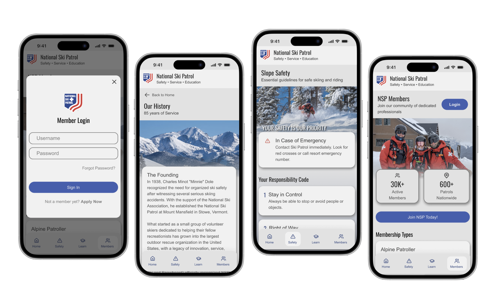
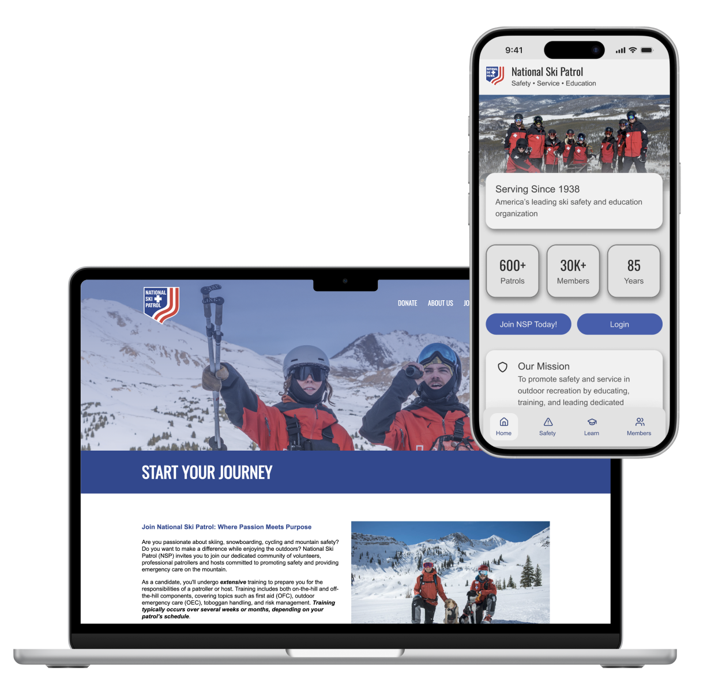
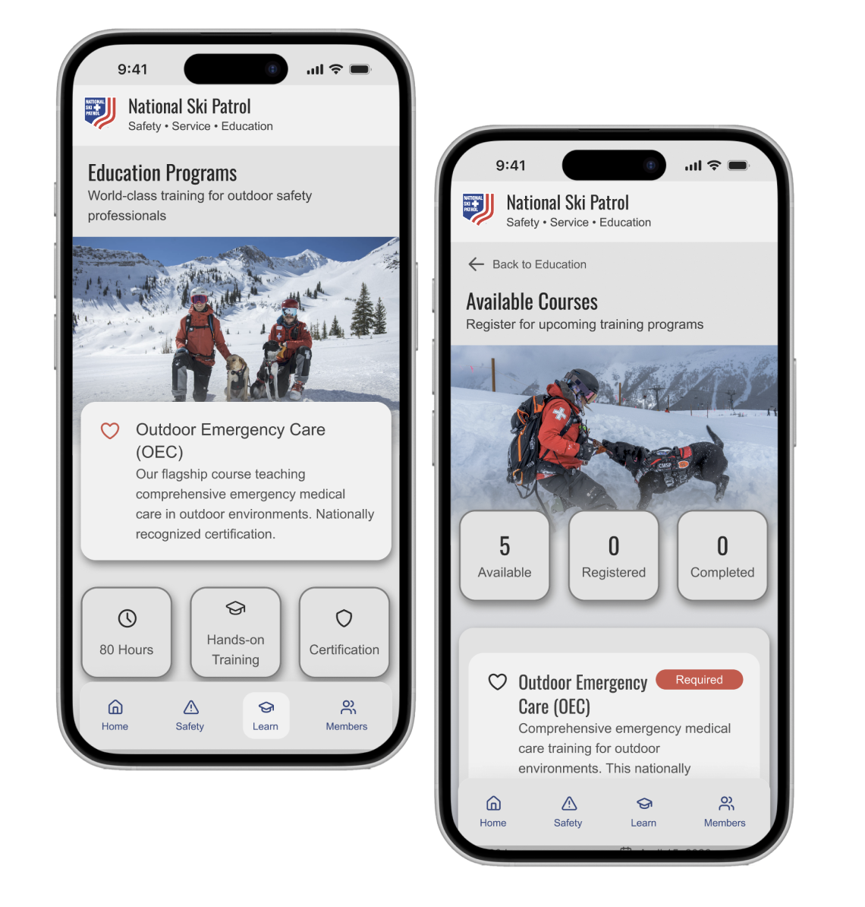
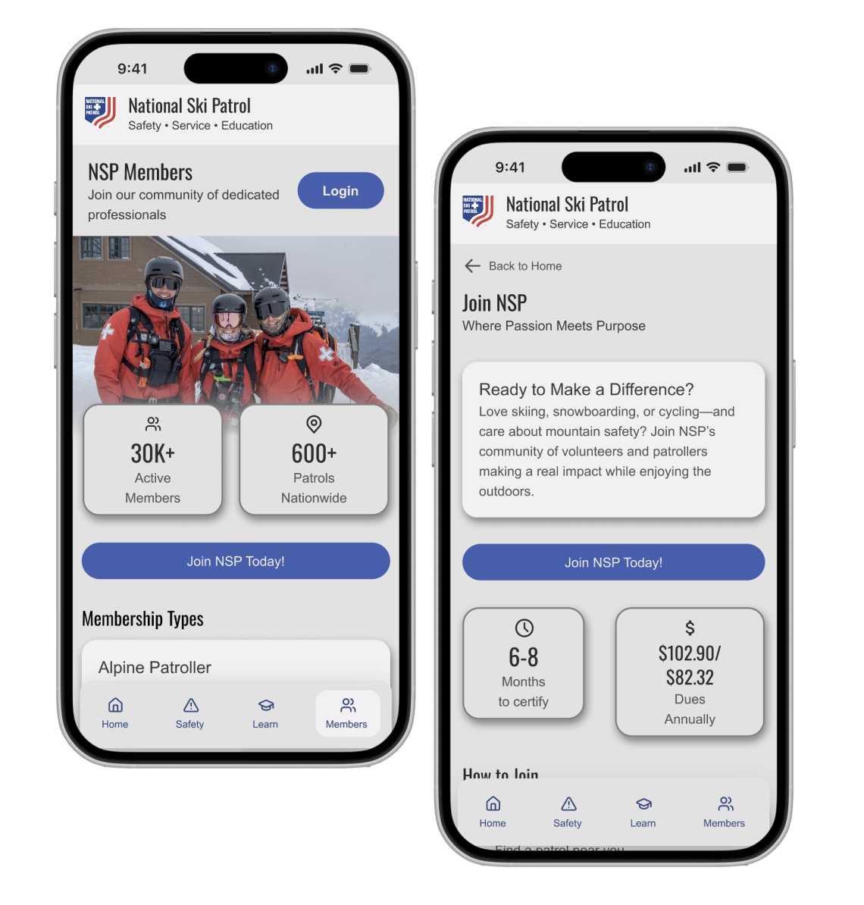
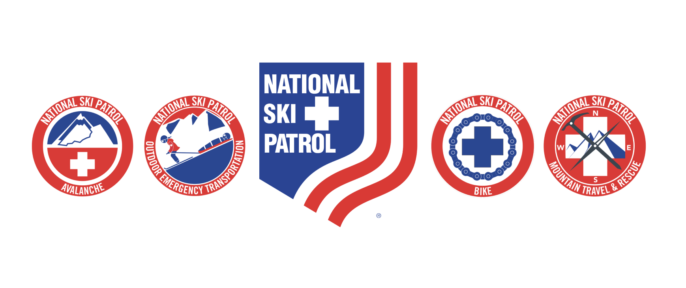

CASE STUDY — [PRODUCT / UX DESIGN]
NSP Mobile — National Ski Patrol brought to mobile
NSP promotes and ensures outdoor safety in ski areas and on bike trails around the world. Their current website features information such as the history of NSP, how to join or donate, ski safety, programs/events, and information for current members. Currently, there is no mobile app version of the site. This limits NSP’s social reach and easy access.
Through this project, I aimed to fix this issue. Through AI iteration, experimenting, and high-fidelity prototyping, I created this mock app to serve as NSP’s mobile interface.

The Process
How it came togetherNational Ski Patrol doesn't currently have a mobile version of their website.
As the NSP community grows and modernizes, it becomes essential that members and interested parties can easily access info such as slope safety, programs, news, and more. Without a mobile app to access these things, NSP members miss out on vital information that is designed to save lives.
User Needs and Concerns
-
Access to Organizational Information
Both prospective and current members need clear, accessible information about NSP, including membership expectations, organizational history, and potential impact.
-
Unified Mobile Experience
Users require a streamlined mobile platform to manage their involvement, including tracking training progress and maintaining membership information efficiently.
-
Progress Tracking
Members need visibility into their training journey, with clear indicators of completed courses and remaining requirements to support ongoing development.
-
Simple Navigation
Users need an intuitive, easy-to-navigate experience that allows them to quickly find important information and access key features without unnecessary steps.
Design Decisions
NSP Branding
To ensure consistency and familiarity, the mobile experience aligns closely with NSP’s existing branding. This allows users to transition seamlessly between platforms while maintaining trust and recognition.

Education-first Approach
As an organization rooted in safety and training, NSP emphasizes education. The app highlights comprehensive organizational information alongside dedicated access to courses and training opportunities for members.

Welcoming Language
NSP prioritizes recruitment and community growth. The app uses clear, approachable language to create an inclusive experience that encourages engagement from first-time users.

Building
Creating the prototype01 - Visual Identity
Drawing inspiration from the existing NSP website, I developed a visual identity for the mobile experience that maintains the organization’s established brand while adapting it for a modern, mobile-first interface. Oswald serves as the primary typeface, paired with Arial for supporting content, creating a bold, clear, and straightforward aesthetic. I also sampled the website’s existing color palette to establish a cohesive foundation and expanded it to support the app’s interface and functionality.

02 - Assets & Components
With the visual identity established, I began building the foundational components of the app. From buttons and navigation elements to imagery and supporting visuals, I developed more than 200 reusable interaction components to create a cohesive and scalable design system.
03 - High-Fidelity Designs
Using the component library I developed, I was able to efficiently assemble high-fidelity screens and bring the final prototype to life. The completed experience includes more than 100 interactive touchpoints, combining instant and animated interactions to create a cohesive user experience.
The Final Product
See it in action[Short summary of the finished product — what it looks like, how it works, and the outcome it delivered.]
![[Describe what this image shows]](images/project-final-1.jpg)
![[Describe what this image shows]](images/project-final-2.jpg)
![[Describe what this image shows]](images/project-final-3.jpg)
Learning Outcomes
What I'd carry forward[Outcome one]
[What this project taught, specifically — a skill, a working method, or a lesson about a design decision that didn't land the first time.]
[Outcome two]
[What this project taught, specifically.]
[Outcome three]
[What this project taught, specifically.]
Curious about another project?
View all work